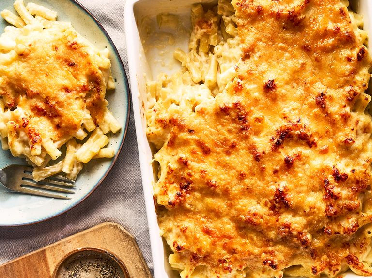

Homemade Mac and Cheese

Description
This classic baked mac and cheese recipe with a buttered bread crumb topping is creamy and comforting. It's easy to make the
cheese sauce from scratch on your stovetop, starting with a roux and adding mix, Cheddar and parmesan, resulting in a rich,
decadent sauce that coats every nook and cranny of the noodles. Serve this comfort-food macaroni and cheese casserole with grilled
meats, sloppy joes, fried chicken or alongside a salad for a meatless dinner.
Ingredients
-
Macaroni: This homemade mac and cheese starts with a box of uncooked
macaroni noodles.
-
Butter and flour: You'll need butter and flour to make a roux for the cheese
sauce. you'll also need two tablespoons of butter for the topping.
-
Milk: Use whole milk for the richest flavor and texture.
-
Cheese: This baked mac and cheese recipe calls for Cheddar and Parmesan
cheeses.
-
Seasonings: Salt and pepper goes into the sauce, while paprika is sprinkled
over the topping.
-
Bread crumbs: Use store-bought dried bread crumbs or make your own at
home.
Steps
-
Boil the noodles: Boil the macaroni in salted water until the noodles are al dente.
Drain and transfer to a prepared baking dish.
-
Make the cheese sauce: Melt butter, then whisk in the flour. Whisk in the
milk, bring to a simmer, and stir in the cheeses. Season with salt and pepper and
continue simmering until the sauce is thick. pour the sauce over the noodles
and stir.
-
Make the topping: Melt two tablespoons of butter in a skillet, add the bread
crumbs and toast until the crumbs are brown. Spread the topping over the
macaroni and cheese, then sprinkle with paprika.
-
Bake the mac and cheese: Bake in the preheated oven until the topping is
golden brown.